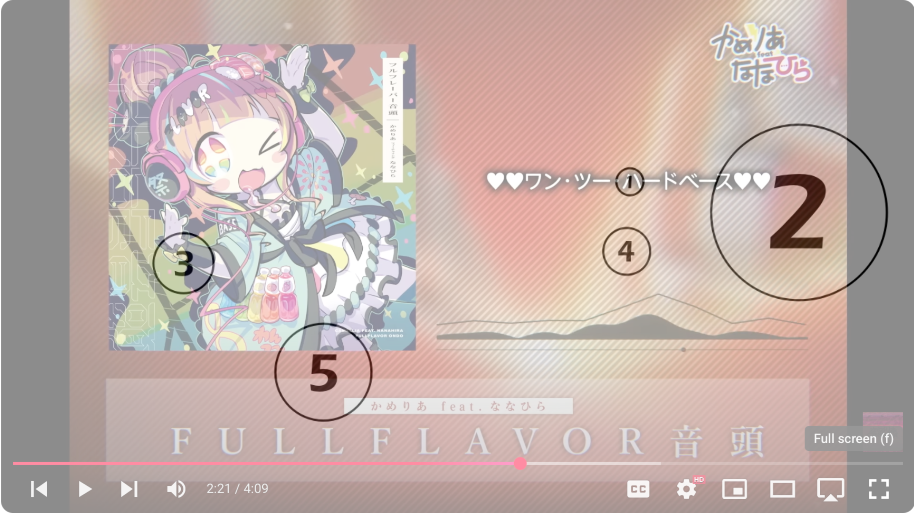
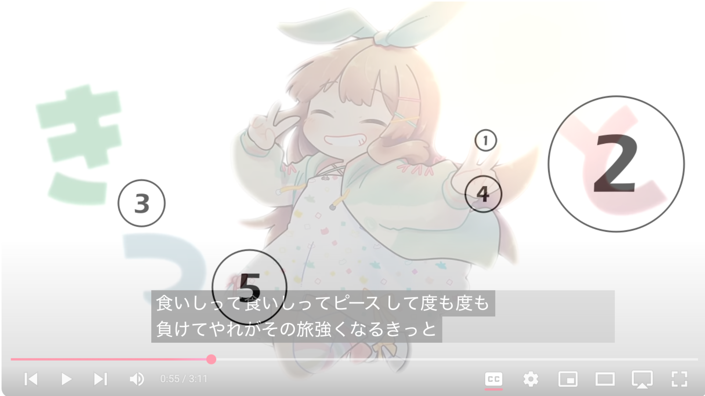
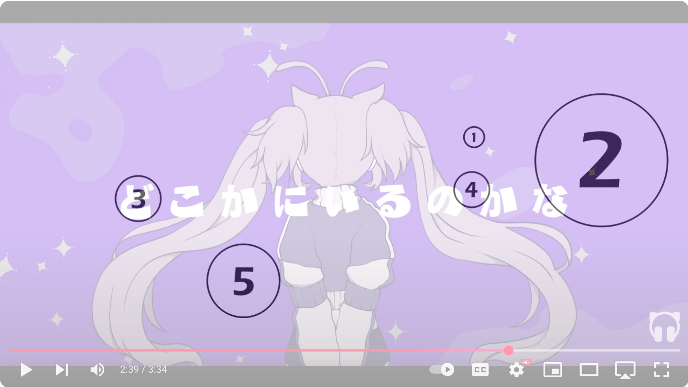
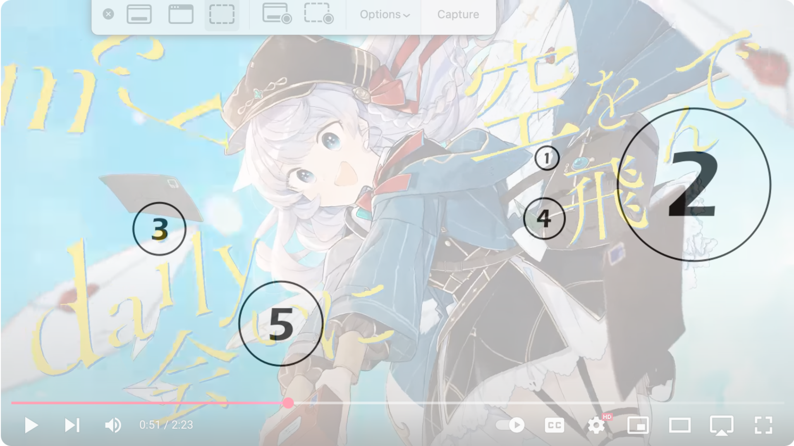

Solution: I really love...
Answer: CUCKOO CLOCK
Written by lightbulbMEOW, kt3
The puzzle text is a reference to the “I love Nanahira” copypasta. Each of the five paragraphs clues a certain Japanese song. Most of these are songs by Nanahira, while the rest of the songs have Nanahira covers. The five songs being referenced are:
| Song | Nanahira music video | Bolded part |
|---|---|---|
| Tsuyogaru Girl | https://www.youtube.com/watch?v=P713lMI2_5E | Surely |
| FULLFLAVOR ONDO | https://www.youtube.com/watch?v=S5uUMWOsjdw | One, two, hard bass!!! |
| I’m a Messenger for U | https://www.youtube.com/watch?v=Q1W6yIgHLb4 | Everyday, she would fly through the sky to meet me. |
| Kunel Engazer | https://www.youtube.com/watch?v=-JNUh7teO30 | We're having a meal, which is sad but it's tasty |
| People People | https://www.youtube.com/watch?v=qyY3UhQhZK4 | I wonder if we'll meet somewhere. |
The final step is to watch the music videos and overlay the given image onto the bolded part of the lyrics in the song. Each circle will overlap with exactly one Japanese character from the music video.
The overlapped characters are ハ, と, ど, け, い, which spell out はとどけい or CUCKOO CLOCK in Japanese.
Author’s Notes
I really love Nanahira. Like, a lot. Like, a whole lot. You have no idea. I love her so much that it is inexplicable, and I'm ninety-nine percent sure that I have an unhealthy obsession. I will never get tired of listening that sweet, angelic voice of hers. It is my life goal to meet up her with her in real life and just say hello to her.
I fall asleep at night dreaming of her holding a personal concert for me, and then she would be sorry tired that she comes and cuddles up to me while we sleep together. If I could just hold her hand for a brief moment, I could die happy. If given the opportunity, I would lightly nibble on her ear just to hear what kind of sweet moans she would let out. Then, I would hug her while she clings to my body hoping that I would stop, but I only continue as she moans louder and louder.
I would give up almost anything just for her to look in my general direction. No matter what I do, I am constantly thinking of her. When I wake up, she is the first thing on my mind. When I go to school, I can only focus on her. When I go come home, I go on the computer so that I can listen to her beautiful voice. When I go to sleep, I dream of her and I living a happy life together. She is my pride, passion, and joy. If she were to call me "Onii-chan," I would probably get diabetes from her sweetness and die.
I wish for nothing but her happiness. If it were for her, I would give my life without any second thoughts. Without her, my life would serve no purpose. I really love Nanahira.
Appendix
FULLFLAVOR ONDO = ハ

Tsuyogaru Girl = と

People People = ど

Kunel Engazer = け

I'm a Messenger for U = い
